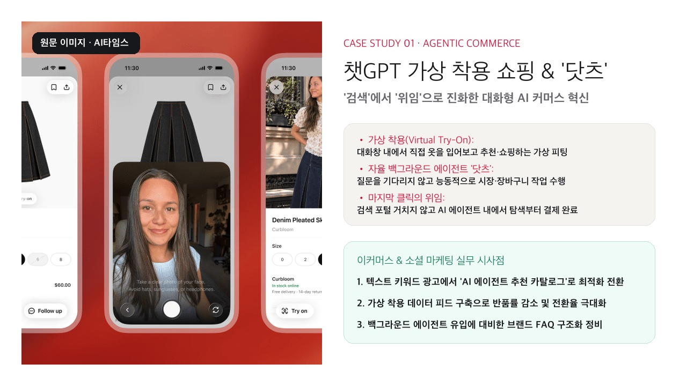
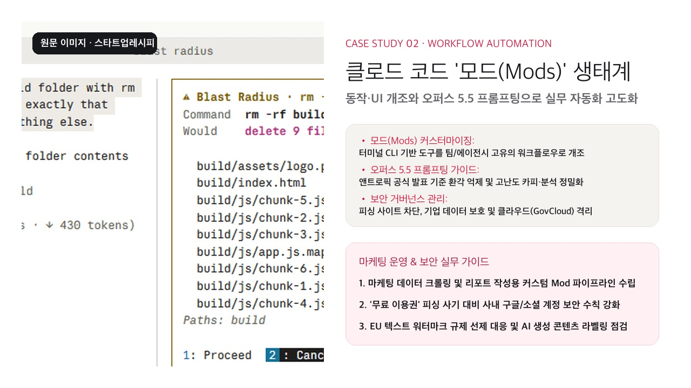
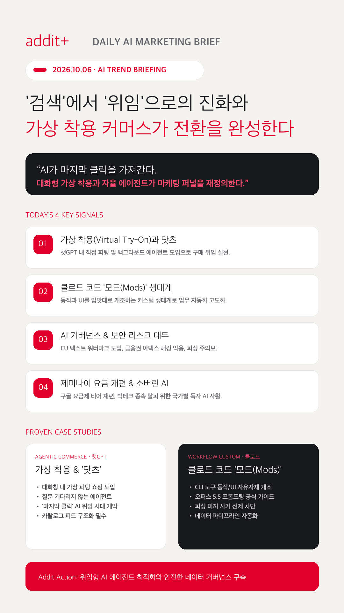

01
'검색'에서 '위임'으로의 패러다임 전환 (마지막 클릭의 실종)
소비자가 포털 검색창 대신 대화형 AI에 과업과 쇼핑 결제를 직접 위임하며 브랜드 유입 경로가 AI 추천 카탈로그로 근본적 전환되고 있습니다.
매일경제 분석 원문 →소비자가 포털 검색창을 거치지 않고 결제까지 위임하는 에이전틱 AI 쇼핑의 도래와, 실무 자동화 툴체인을 혁신하는 클로드 코드 모드(Mods) 생태계를 집중 분석합니다.
소비자가 포털 검색창 대신 대화형 AI에 과업과 쇼핑 결제를 직접 위임하며 브랜드 유입 경로가 AI 추천 카탈로그로 근본적 전환되고 있습니다.
매일경제 분석 원문 →대화창 내에서 직접 옷을 피팅해보고 결제까지 직결하는 가상 착용과, 질문을 기다리지 않고 백그라운드에서 동작하는 자율 에이전트가 도입되었습니다.
AI타임스 보도 원문 →터미널 CLI 도구의 동작과 UI를 입맛대로 개조하는 모드 기능이 추가되어 기업 맞춤 마케팅 크롤링 및 데이터 파이프라인 자동화가 가능해졌습니다.
스타트업레시피 원문 →EU 지역 챗GPT 텍스트 워터마크 선제 적용, 오픈AI GPT-6.1 아스트라 출시 철회, 금융권 AI 해킹 악용(아텍스) 등 거버넌스 리스크가 핵심 과제로 부상했습니다.
연합뉴스 보도 원문 →
원문 이미지 · AI타임스사용자가 대화창 안에서 직접 옷을 입어보고 추천을 받아 결제까지 연결하는 가상 피팅 기능을 탑재했습니다. 질문을 기다리지 않고 장바구니를 점검하는 백그라운드 에이전트 닷츠와 결합되어 '검색 노출'에서 '구매 위임'으로 퍼널이 완성된 대표 사례입니다.

원문 이미지 · 스타트업레시피CLI 기반 자동화 도구 클로드 코드에 사용자 맞춤 동작과 UI를 개조할 수 있는 '모드(Mod)' 기능이 추가되었습니다. 오퍼스 5.5 프롬프팅 가이드라인과 결합해 마케팅 데이터 정제와 트렌드 수집을 자동화하며 실무 리드타임을 70% 이상 단축했습니다.
소비자가 포털을 거치지 않고 AI에게 구매를 위임하므로, 상품 스펙, 핏(Fit) 데이터, FAQ 구조화 데이터를 AI가 오인 없이 추출할 수 있도록 정비합니다.
매일경제 AI 위임 분석 보기 →정책 공지형 콘텐츠를 지양하고, 시민의 일상과 맞닿은 질문과 생활 밀착형 숏폼을 기획해 댓글창을 실시간 공론장이자 커뮤니티로 활성화합니다.
대구시 사례 분석 근거 보기 →20~30개 마이크로 UGC를 유기적으로 테스트한 후 완주율과 참여율이 검증된 상위 소재에만 광고비를 집중 투입해 ROAS와 전환 효율을 극대화합니다.
Collabify 캠페인 근거 보기 →금융권 AI 해킹 악용 정황(아텍스) 및 '무료 이용권' 미끼 피싱 사기가 빈발하므로 웹/API 취약점을 점검하고 사내 계정 보안 수칙을 즉시 강화합니다.
매일경제 피싱 주의보 보기 →AI타임스 챗GPT 가상 착용 쇼핑 보도 원문의 실제 이미지를 활용하여 에이전틱 커머스 사례 카드를 구성했습니다.
AI타임스 원문 확인 →스타트업레시피 클로드 코드 모드 기사의 실제 이미지를 바탕으로 업무 자동화 파이프라인 카드를 제작했습니다.
스타트업레시피 원문 확인 →
마케팅의 미래는 노출량 경쟁이 아니라 소비자의 구매 과업을 직접 실행하는 AI 에이전트 생태계와 맞춤형 자동화 툴체인을 선점할 때 완성됩니다.